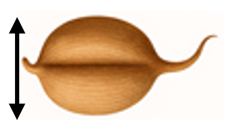
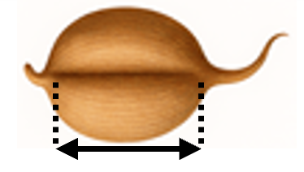

Seed Identifier
Seed Measurements
Seed Length (mm)
5.0
Seed Width (mm)

3.0
Groove Length (mm)

4.5
Predict wheat species
Show sample data
Seed Length (mm)
Seed Width (mm)
Groove Length (mm)
Wheat Type
5.763
3.312
5.22
1
5.554
3.333
4.956
1
5.291
3.337
4.825
1
5.324
3.379
4.805
1
5.658
3.562
5.175
1
6.191
3.561
6.06
2
5.998
3.484
5.877
2
5.978
3.594
5.791
2
6.154
3.93
6.079
2
6.017
3.486
5.841
2
5.137
2.981
4.87
3
5.14
2.795
5.003
3
5.236
3.232
5.056
3
5.175
2.836
5.044
3
5.243
2.974
5.063
3
 5.0
5.0
5.0
5.0